The first capture after launch showed the code with nothing above or beside it: no 6a8e34 · Brief · Diff · Files strip, no breadcrumb or Read/Edit/Diff, and in the zoomed pane no rail. Opening scratch/notes.md (rendered Markdown) brought them all back, and the view tree still held them, so they were being painted over. WindowServer's own capture (screencapture -l) showed the same, so it was not a cacheDisplay artifact.
Cause: CodeReaderGutterView.draw fills dirtyRect with the background. Since macOS 14, views don't clip by default and AppKit hands out dirty rects reaching past the view, so the gutter painted over everything around the reader. Fix in TaskCodeReader.swift: the reader's container and gutter set clipsToBounds = true.
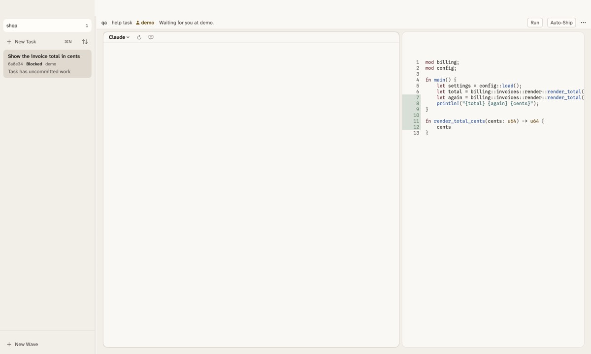
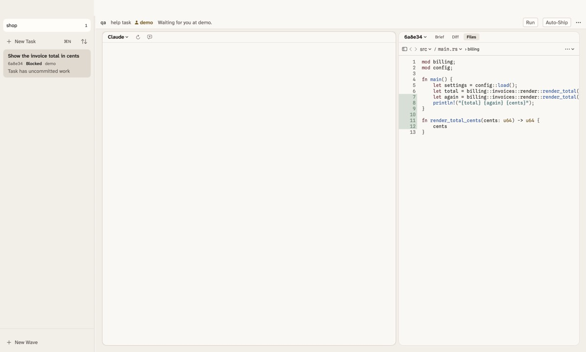
src / main.rs › billing) and reader.lf desktop files src/app/WorkModel.swift:3000-3004 with main.rs open: the reader showed lines 1–49, no mark. Presenting a line in the file already showing worked. The same path serves ⌘-click definitions and Back into another file.
Two causes, traced in a new unit test: the scroll clamped against the text view's previous height (the old file's), and the container's next layout (a 4-digit gutter instead of 2) resized the scroll view and reset the clip. Now the scroll waits for pending container layout (handleLayout runs it), and a far line is revealed with scrollRangeToVisible first, which makes TextKit size the text view, before centering. New test jumpingIntoAnotherLongFileScrollsToTheMarkedLine fails without the fix.
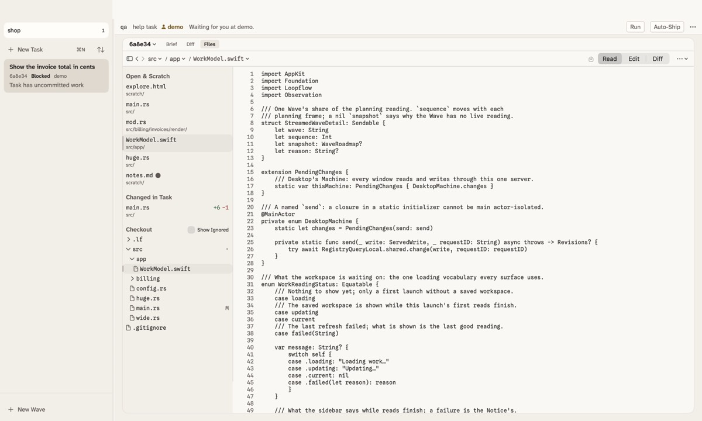
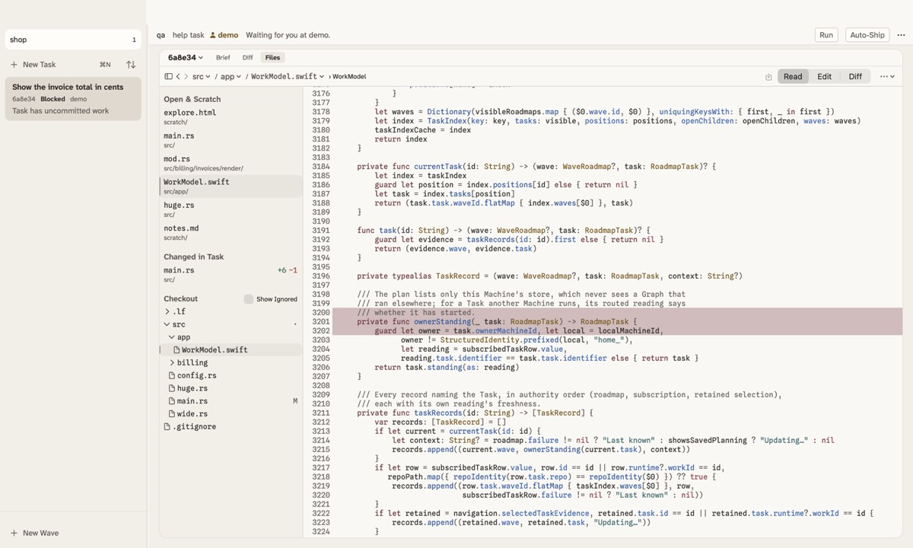
After drag-selecting lines 5–8 and then picking line 6 in the gutter, the grey text selection stayed and shaded the whole comment slot. Picking gutter lines now clears the text selection; the comment range shows as the line highlight.
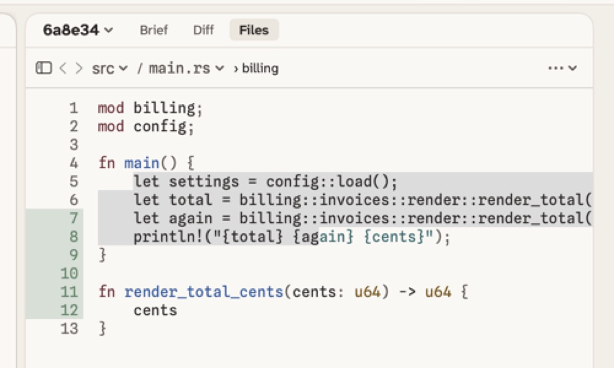
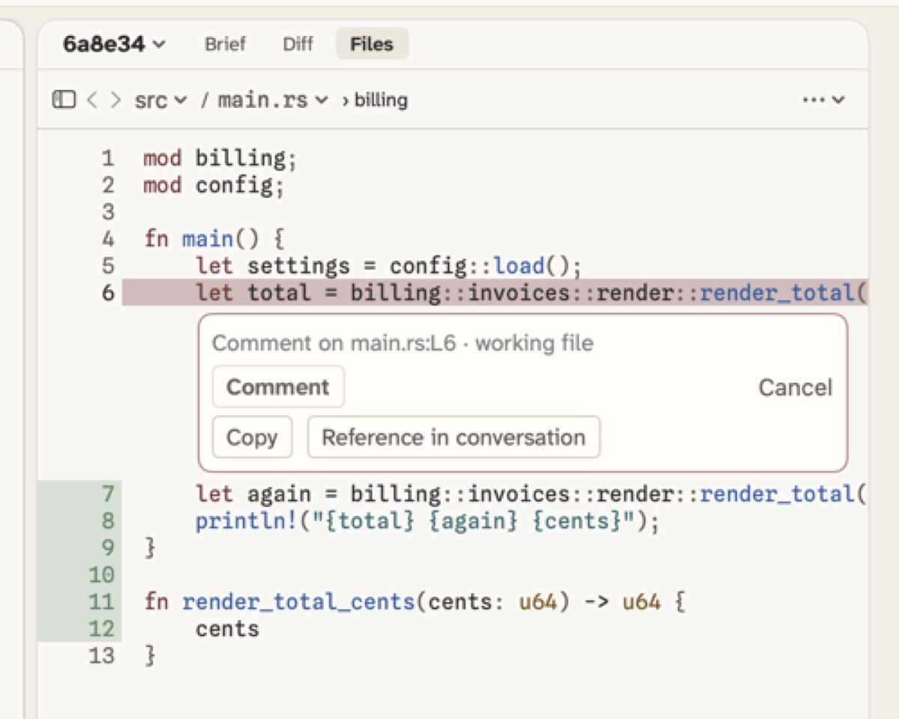
| Scenario | What happened |
|---|---|
⌘-click render_total | Inline “Definitions of render_total” opens under line 6 with both declarations. Picking one opens render/mod.rs at line 4, marked, with the tree revealed through billing / invoices / render. files-back returns to main.rs line 6, marked. |
| Comment into the conversation | ⇧-click extends to L6-7. A typed comment queues (“1 comment · Send to conversation ⌘↩”). Send typed `src/main.rs:L6` (working file) Use the cents helper here too into the Session's unsent input (read with desktop capture -p session). |
| ⌘F in a narrow pane | A match at the end of a long line scrolls sideways to show it; a match near the start scrolls back to x = 0. The field is bordered. |
| ⌘P | rendmod finds src/billing/invoices/render/mod.rs; narrow panes list without preview; Return opens it. |
| Scratch page rewritten twice | Reader stays on main.rs; notes.md gets a dot in Open & Scratch and “Updated scratch/notes.md · Open ×” appears. |
| Edit, per-file Diff | Edit shows the editor; Diff shows the file's change with 1 change stepper and layout picker. |
| Narrow pane, drawer | At about 270 pt the strip scrolls to keep Files visible (Brief clips to “·ief”); the drawer opens over the reader. |
| Loopflow Dark | Reader, gutter tints, peek and the presented-line mark all read clearly. |
| HTML presentation, Back | lf desktop files scratch/explore.html renders at scrollY=0; Back returns to the same WorkModel line. |
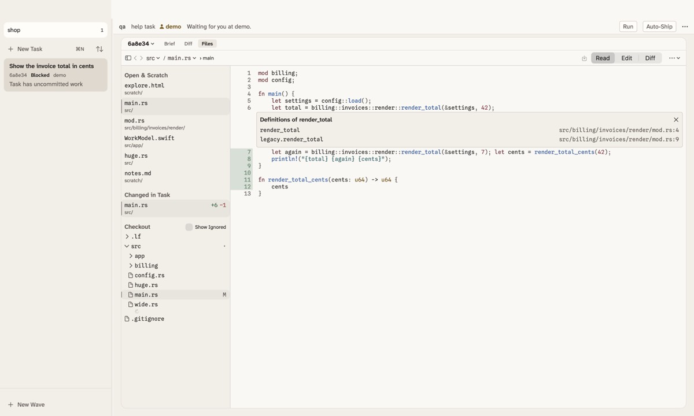
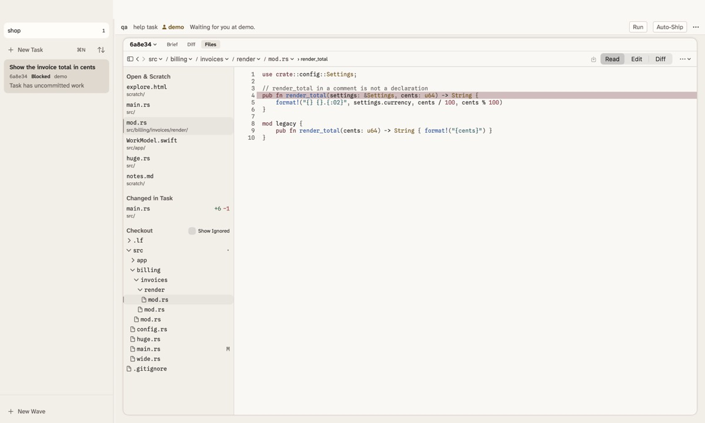
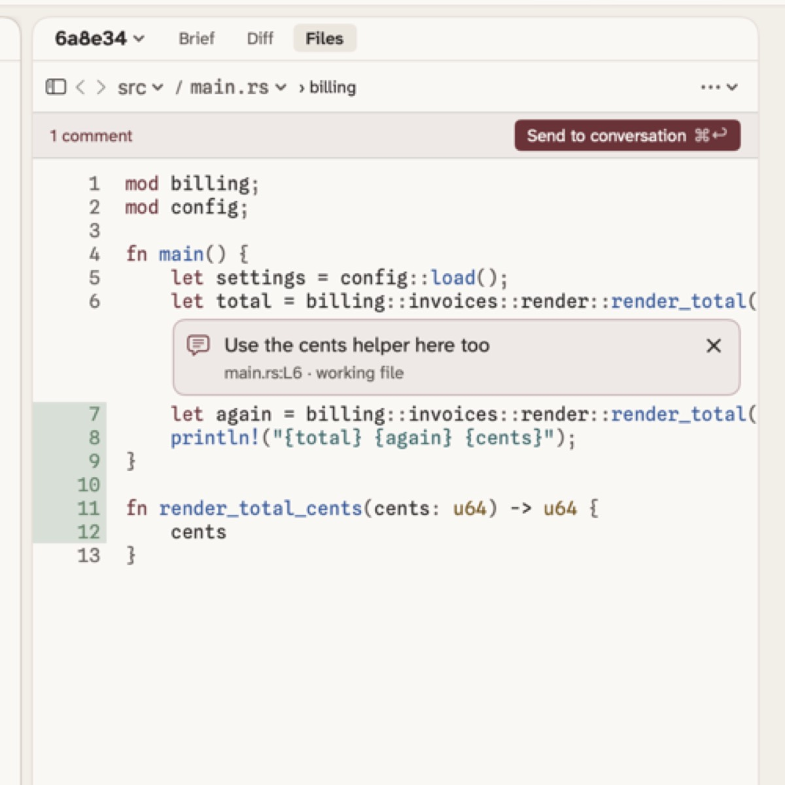
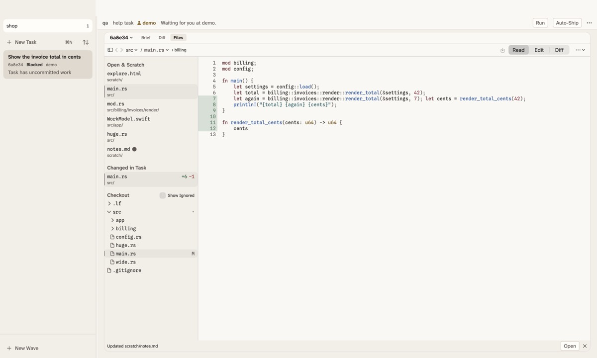
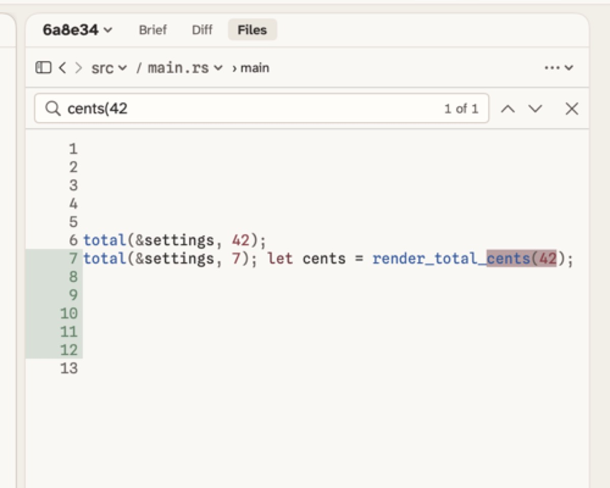
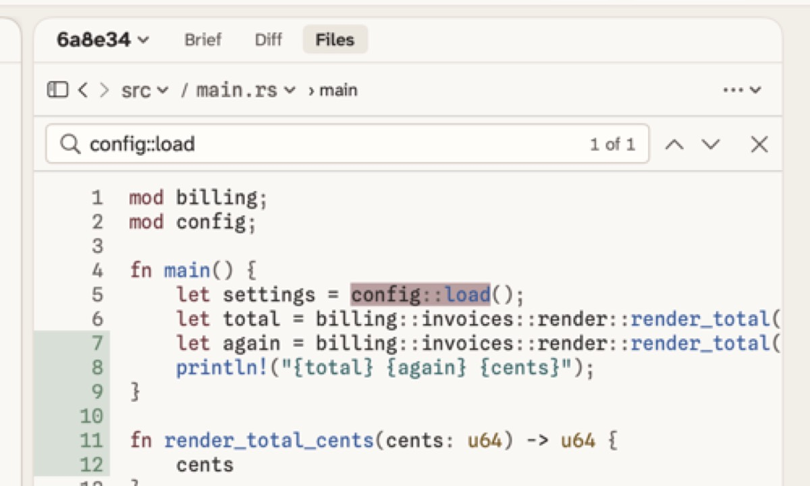
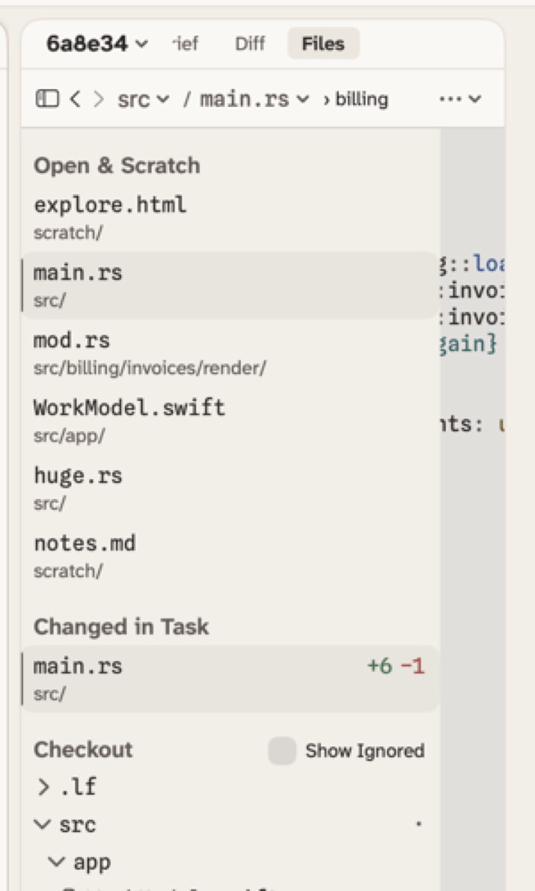
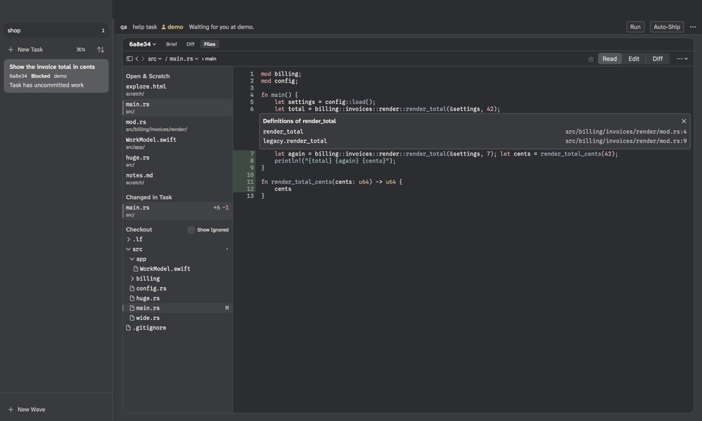
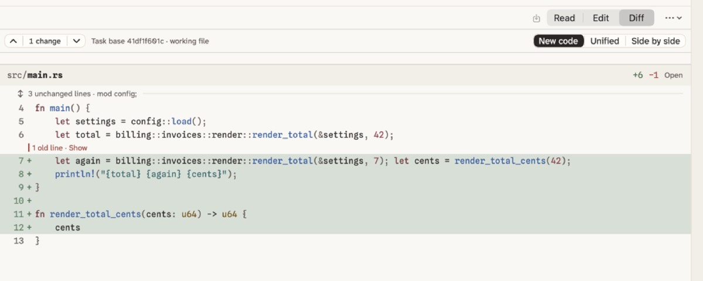
Finding a nested file, Read with change marks and outline symbol, ⌘-click with an inline peek, landing and Back with marks, landing in a far line of another long file, native drag-selection, gutter comments into the conversation's input, Find with sideways reveal, calm scratch updates, Edit and per-file Diff, the drawer, Dark and Light.
mousedown, which calls the view's mouseDown directly (the real code, minus the window's first-click gate). Drag-selection, gutter picks and ⌘-click ran in the real views; a physical trackpad press and ⌘C were not used.gd/gr after a click. Key chords need a key window.TaskFileBrowserJourneyTests (peer over real task.files.watch) passed.› billing (from mod billing; on line 1), which encloses nothing.wide.rs and pushed .gitignore down. It was gone by the next capture.scripts/test_desktop.sh --filter 'TaskFiles|LargeFileReaderTests|TaskFileBrowserJourneyTests' → 86 tests in 3 suites passed jumpingIntoAnotherLongFileScrollsToTheMarkedLine with the scroll fix reverted → fails (clip at 0)